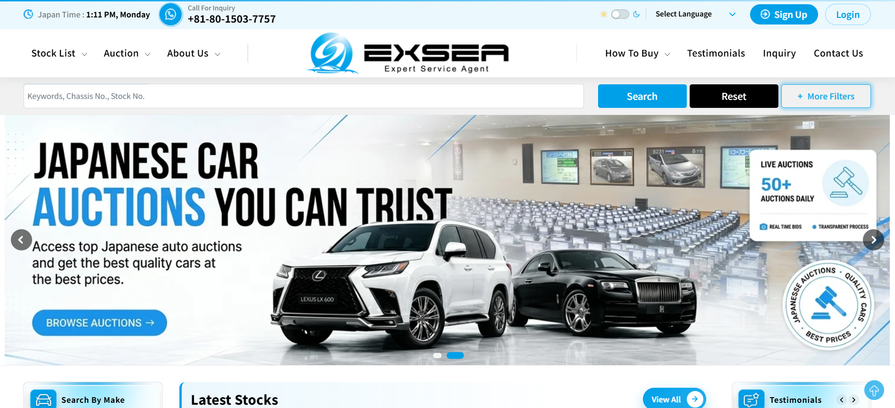
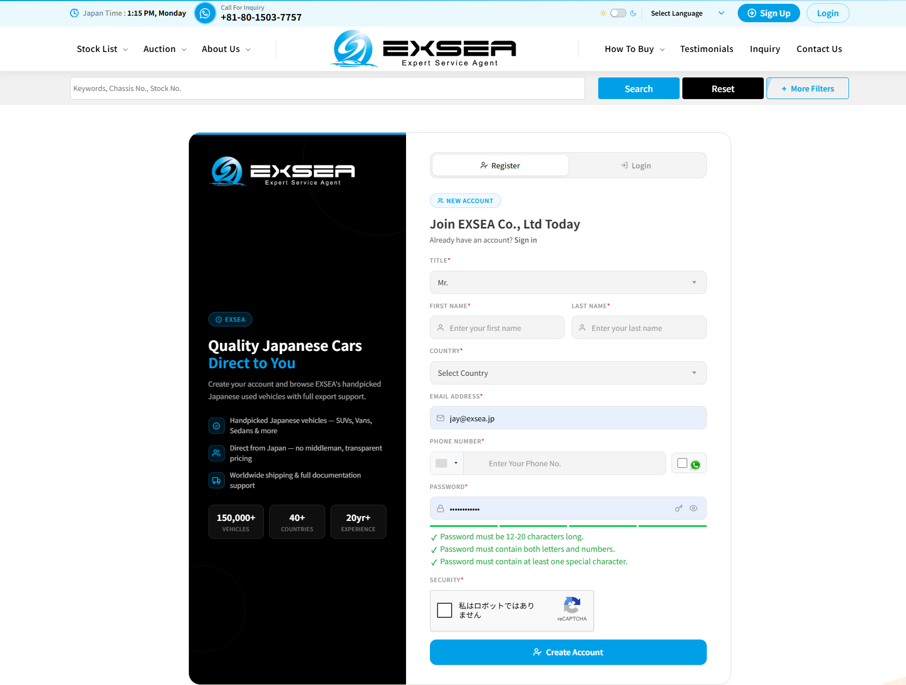
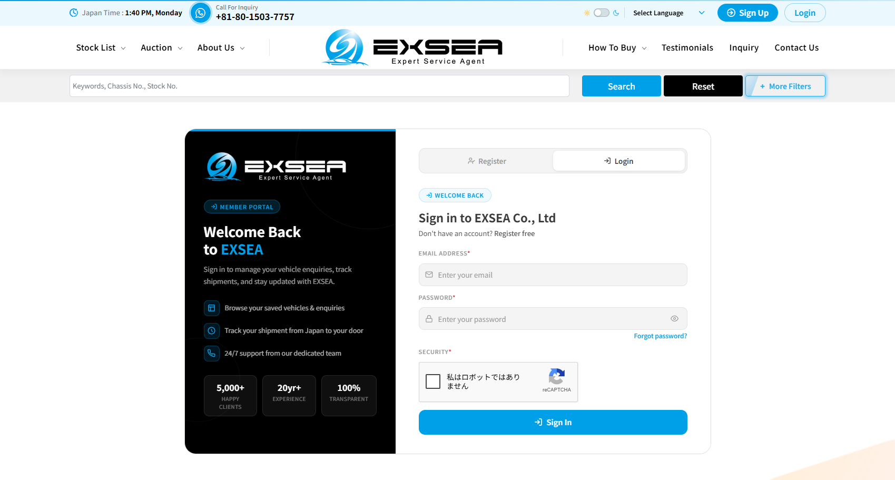
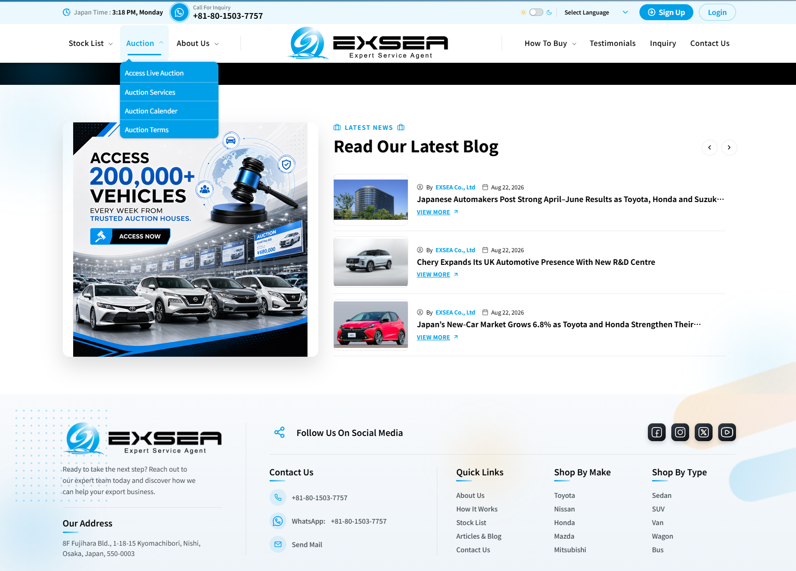
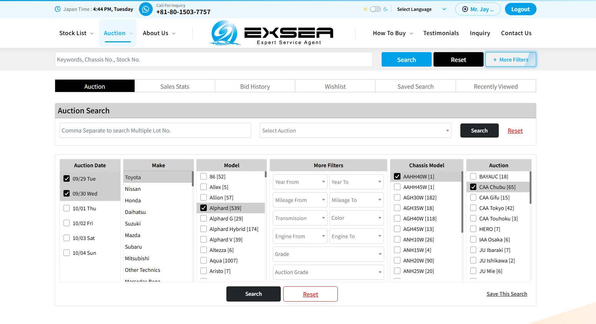
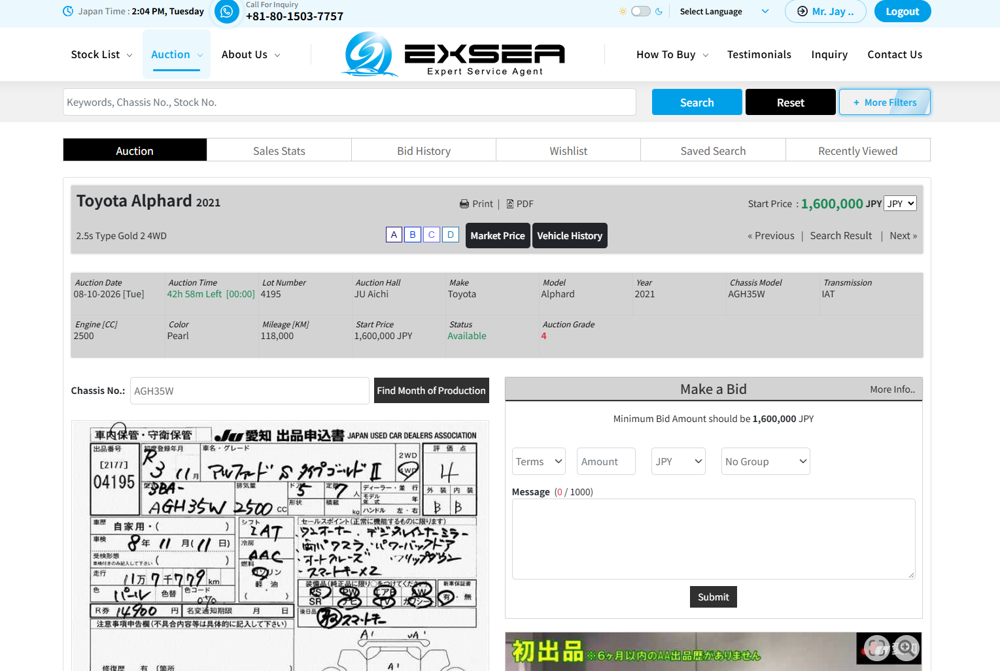

How to use GABS — our stock & live auction site, in 6 steps
GABS (cars.exsea.net) is where you see EXSEA's own dealer stock and trade-ins, and bid on 200,000+ auction cars a week with our team doing the bidding, inspection and shipping. Sign up takes two minutes; we switch on your auction access the same day.
Top right of the page. “Stock List” shows our cars for sale now; “Auction” is the live auction section.
You can use the search bar (keywords, chassis no., stock no.) without logging in.

2Register
Select Mr / Ms / Mrs, then fill in first and last name, country, email address and phone number.
Make a password: 12–20 characters, letters and numbers, at least one special character.
Tick “I’m not a robot” and click to create the account.

3Log in — and tell us you have registered
Use the same email and password.
EXSEA staff then switch on your auction access. Reply to our email (or WhatsApp +81 80 1503 7757) with the email you registered with, and we do it the same business day.

4Open “Auction → Access Live Auction”
After permission, the Auction menu opens the live auction section: 50+ auction houses daily, 200,000+ vehicles a week.

5Search the auctions
Pick the auction date / prefecture, maker, model and chassis model.
Use the filters (year, mileage, grade, price…) and click Search. You can also choose a specific auction house.

6Open a car: auction sheet, grade, start price — and tell us your bid
Each car shows the original auction sheet, grade, mileage, start price and the auction date and time.
“Market Price” and “Vehicle History” help you judge. Use “Make a Bid” to tell us your maximum — our team places the real bid for you in Japan and confirms the result.

FOR OUR EXISTING CUSTOMERS Normally a deposit or advance payment is required before auction information is opened. Because this guide is sent only to customers we already know, we switch on your auction access without a deposit. Just register and let us know.
Hassle-freeWe search, bid, inspect, clean (biosecurity), document and ship. You pick and approve.
Dealer trade-ins tooNot only auctions: our own dealer stock and trade-ins are on the Stock List with real photos.
Honest & transparentOriginal auction sheet and inspection sheet, up to 60 real photos, odometer written on the B/L, one price rule for everyone.